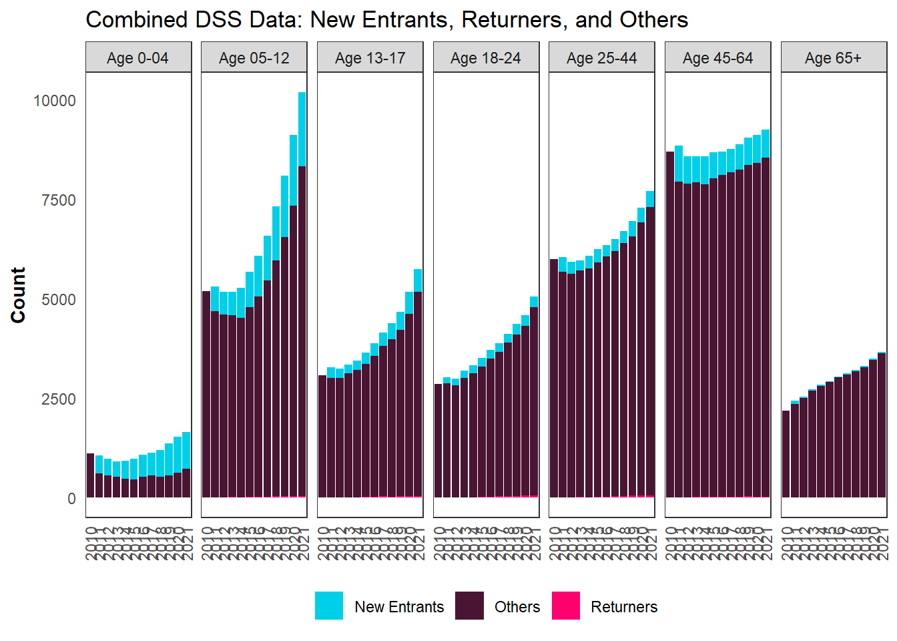
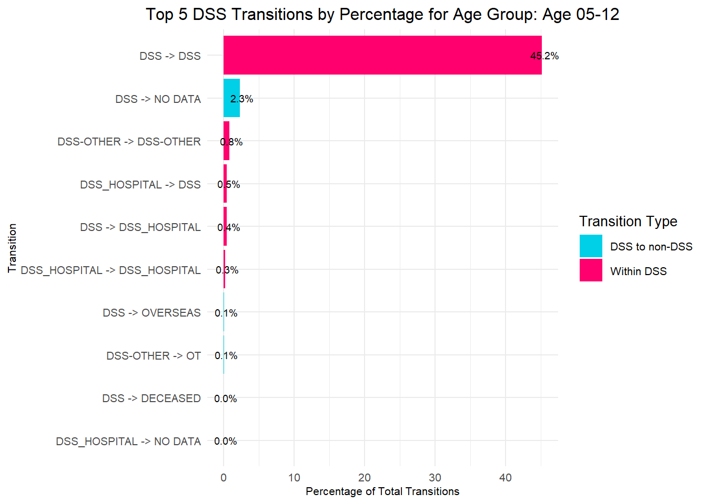

| indicator_category | indicator | Description | Timing | Source |
|---|---|---|---|---|
| Population | Pop_group | Which of the eight groups in the population we are looking at. The “DSS subset” groups are not mutually exclusive (people can receive multiple services), whereas the other population groups are mutually exclusive. | NA | Various |
| Population | Age_group | Groupings based on people’s age | As of 2018 Census | personal_detail |
| Demographics | Ethnicity - Asian | Person’s reported ethnicity | Time invariant | personal_detail |
| Demographics | Ethnicity - European | Person’s reported ethnicity | Time invariant | personal_detail |
| Demographics | Ethnicity - Maori | Person’s reported ethnicity | Time invariant | personal_detail |
| Demographics | Ethnicity - MELAA | Person’s reported ethnicity | Time invariant | personal_detail |
| Demographics | Ethnicity - Other | Person’s reported ethnicity | Time invariant | personal_detail |
| Demographics | Ethnicity - Pacific | Person’s reported ethnicity | Time invariant | personal_detail |
| Demographics | Has a dependent child | Person has a child aged <18 | As of 2018 Census | personal_detail |
| Demographics | Has ever had a child | Person is the birth parent of any other person | Ever up to the reference date (2018 Census or 31st Mar 2021) | personal_detail |
| Demographics | Male | Person’s reported gender is male | Time invariant | personal_detail |
| Demographics | Regional Council | Regional Council corresponding to person’s address | As of reference date | address_notification |
| Demographics | Urban/rural | Urban/rural category of person’s address | As of reference date | address_notification |
| Health | Alternative Education (ever) | Whether the person has ever received Alternative Education | Ever, up to reference date | moe_clean.student_intervention |
| Health | Attendance Service (ever) | Whether the person has ever received Attendance Service | Ever, up to reference date | moe_clean.student_intervention |
| Health | Child Disability Allowance | Whether the person has received the CDA | 12 months before reference date | msd |
| Health | Disability Allowance | Whether the person has received the DA | 12 months before reference date | msd |
| Health | Job Seeker benefit for Health/Disability | Whether the person has received Job Seeker benefit for health or disability | 12 months before reference date | msd |
| Health | Ongoing Resourcing Scheme (ever) | Whether the person has ever received ORS | Ever, up to reference date | moe_clean.student_intervention |
| Health | Parent receives CDA | Whether either birth parent has received the CDA | 12 months before reference date | msd |
| Health | Parent receives Disability Allowance | Whether either birth parent has received the DA | 12 months before reference date | msd |
| Health | Parent receives JS Health/Disability | Whether either birth parent has received Job Seeker benefit for health or disability | 12 months before reference date | msd |
| Health | Parent receives Special DA | Whether either birth parent has received Special Disability Allowance | 12 months before reference date | msd |
| Health | Parent receives Supported Living Payment | Whether either birth parent has received SLP | 12 months before reference date | msd |
| Health | PHO enrolment in 2018 | Whether the person is enrolled in a Primary Healthcare Organisation | As of reference date | moh.pho |
| Health | School High Health Needs Fund (ever) | Whether the person has ever received SHHNF (at school) | Ever, up to reference date | moe_clean.student_intervention |
| Health | Special Disability Allowance | Whether the person has received the SDA | 12 months before reference date | msd |
| Health | Special school (ever) | Whether the person has ever enrolled in a special school | Ever, up to reference date | moe_clean.student_enrol |
| Health | Supported Living Payment | Whether the person has received SLP | 12 months before reference date | msd |
| Housing | Accomodation supplement | Whether the person has receive Accomodation Supplement | As of reference date | msd |
| Housing | Address type | The house type of the person’s address | As of reference date | address_notification |
| Housing | In public housing | Whether the person is in public housing | As of reference date | hnz |
| Housing | Live with grandparent | Whether the person lives with a grandparent | As of reference date | census |
| Housing | Live with parent | Whether the person lives with a parent | As of reference date | census |
| Housing | On social housing waitlist | Whether the person is on the social housing waitlist | As of reference date | hnz |
| Housing | Parent accomodation supplement | Whether either birth parent has received Accomodation Supplement | 12 months before 2018 Census | msd |
| Justice | Offender - any offence | Whether the person has been proceeded against by Police | Ever, up to reference date | pol |
| Justice | Offender - violent offence | Whether the person has been proceeded against by Police for a violent offence | Ever, up to reference date | pol |
| Justice | Served community sentence ever | Whether the person has ever served a community sentence | Ever, up to reference date | cor |
| Justice | Served community sentence in 2018 | Whether the person is serving a community sentence in 2018 | In 2018 | cor |
| Justice | Served custodial sentence ever | Whether the person has ever served a custodial sentence | Ever, up to reference date | cor |
| Justice | Served custodial sentence in 2018 | Whether the person is serving a custodial sentence in 2018 | In 2018 | cor |
| Justice | Victim - any offence | Whether the person has been a recorded victim of an offence | Ever, up to reference date | pol |
| Justice | Victim - violent offence | Whether the person has been a recorded victim of a violent offence | Ever, up to reference date | pol |
| Need | ACC - Case management | Person has an active spell of case management that includes the 2018 Census date | As of reference date | acc |
| Need | ACC - Sensitive claim | Person has a spell of case management or WC AND have an injury arising from an ACC sensitive claim, often a result of sexual assault, abuse or neglect | As of reference date | acc |
| Need | ACC - Serious injury | Person has a spell of case management or WC AND have a serious injury (ACC defined), eg Traumatic Brain Injury, Parapaleigia, Quadrapaligia | As of reference date | acc |
| Need | ACC - Workers Compensation | Person has an active spell of receiving worker’s compensation which includes the 2018 Census date | As of reference date | acc |
| Need | ADHD | Whether the person has evidence of this condition | Ever, up to reference date | Various: moh, acc, msd |
| Need | Amputation of hand/arm | Whether the person has evidence of this condition | Ever, up to reference date | Various: moh, acc, msd |
| Need | Ataxia | Whether the person has evidence of this condition | Ever, up to reference date | Various: moh, acc, msd |
| Need | Autism Spectrum Disorder | Whether the person has evidence of this condition | Ever, up to reference date | Various: moh, acc, msd |
| Need | Bipolar | Whether the person has evidence of this condition | Ever, up to reference date | Various: moh, acc, msd |
| Need | Blind or nearly blind | Whether the person has evidence of this condition | Ever, up to reference date | Various: moh, acc, msd |
| Need | Cerebral Palsy | Whether the person has evidence of this condition | Ever, up to reference date | Various: moh, acc, msd |
| Need | Deaf or nearly deaf | Whether the person has evidence of this condition | Ever, up to reference date | Various: moh, acc, msd |
| Need | Developmental Delay | Whether the person has evidence of this condition | Ever, up to reference date | Various: moh, acc, msd |
| Need | Down Syndrome | Whether the person has evidence of this condition | Ever, up to reference date | Various: moh, acc, msd |
| Need | Foetal Alcohol Spectrum Disorder | Whether the person has evidence of this condition | Ever, up to reference date | Various: moh, acc, msd |
| Need | Fragile X | Whether the person has evidence of this condition | Ever, up to reference date | Various: moh, acc, msd |
| Need | Generalised Anxiety Disorder | Whether the person has evidence of this condition | Ever, up to reference date | Various: moh, acc, msd |
| Need | Huntingtons | Whether the person has evidence of this condition | Ever, up to reference date | Various: moh, acc, msd |
| Need | Incontinence (faecal/urinary) | Whether the person has evidence of this condition | Ever, up to reference date | Various: moh, acc, msd |
| Need | Intellectual Disability | Whether the person has evidence of this condition | Ever, up to reference date | Various: moh, acc, msd |
| Need | Klinefelters Syndrome | Whether the person has evidence of this condition | Ever, up to reference date | Various: moh, acc, msd |
| Need | Major Depressive Disorder | Whether the person has evidence of this condition | Ever, up to reference date | Various: moh, acc, msd |
| Need | Motor Neuron Disease | Whether the person has evidence of this condition | Ever, up to reference date | Various: moh, acc, msd |
| Need | Multiple Sclerosis | Whether the person has evidence of this condition | Ever, up to reference date | Various: moh, acc, msd |
| Need | Muscular Dystrophy | Whether the person has evidence of this condition | Ever, up to reference date | Various: moh, acc, msd |
| Need | Osteoarthritis | Whether the person has evidence of this condition | Ever, up to reference date | Various: moh, acc, msd |
| Need | Polio | Whether the person has evidence of this condition | Ever, up to reference date | Various: moh, acc, msd |
| Need | Schizophrenia | Whether the person has evidence of this condition | Ever, up to reference date | Various: moh, acc, msd |
| Need | Spina Bifida | Whether the person has evidence of this condition | Ever, up to reference date | Various: moh, acc, msd |
| Need | Stroke | Whether the person has evidence of this condition. | Separated in to time-limited groups: 1: <3 months before reference date; 2: 3-12 months before reference date; 3: 12+ months before reference date | Various: moh, acc, msd |
| Need | WGSS - Communication | Response to WGSS question in 2018 Census (5=missing/no response) | As of reference date | census |
| Need | WGSS - Hearing | Response to WGSS question in 2018 Census (5=missing/no response) | As of reference date | census |
| Need | WGSS - Remembering | Response to WGSS question in 2018 Census (5=missing/no response) | As of reference date | census |
| Need | WGSS - Seeing | Response to WGSS question in 2018 Census (5=missing/no response) | As of reference date | census |
| Need | WGSS - Walking | Response to WGSS question in 2018 Census (5=missing/no response) | As of reference date | census |
| Need | WGSS - Washing | Response to WGSS question in 2018 Census (5=missing/no response) | As of reference date | census |
| Need | Wheelchair dependence | Whether the person has evidence of this condition. | Ever, up to reference date | Various: moh, acc, msd |
| Oranga Tamariki | Person has any drivers licence | Person has a current driver’s licence (of any type) | As of reference date | nzta |
| Oranga Tamariki | Person has full drivers licence | Person has a current full driver’s licence | As of reference date | nzta |
| Oranga Tamariki | Person has had care placement | Person has been placed in care | Ever, up to reference date | ot |
| Oranga Tamariki | Person is subject of a ROC | Person is the subject of a report of concern to Oranga Tamariki | Ever, up to reference date | ot |
| Oranga Tamariki | Person is subject of investigation | Person is the subject of an Oranga Tamariki investigation | Ever, up to reference date | ot |
| Oranga Tamariki | Persons child has had care placement | Person’s child has been placed in care (NULL for people without children) | Ever, up to reference date | ot |
| Oranga Tamariki | Persons child is subject of a ROC | Person’s child has been the subject of a report of concern to Oranga Tamariki (NULL for people without children) | Ever, up to reference date | ot |
| Oranga Tamariki | Persons child is subject of investigation | Person’s child the subject of an Oranga Tamariki investigation (NULL for people without children) | Ever, up to reference date | ot |
| Oranga Tamariki | Persons parent has any drivers licence | Person’s child has a current driver’s licence (of any type) | As of reference date | nzta |
| Oranga Tamariki | Persons parent has full drivers licence | Person’s child has a current full driver’s licence | As of reference date | nzta |
| Parent SES | Parent 1 highest qual (NQF) | The highest qualification of parent 1 (generally the person’s mother) | As of reference date | Various: moe, census, msd |
| Parent SES | Parent 1 income bands | The income of parent 1 | At reference date | apc, census |
| Parent SES | Parent 1 main benefit | Whether parent 1 is receiving a main benefit | As of reference date | msd |
| Parent SES | Parent 1 total income | The total income of parent 1 (to derive mean income) | At reference date | apc, census |
| Parent SES | Parent 1 wages/salary | Whether parent 1 received income from wages or salary | At reference date | apc, census |
| Parent SES | Parent 2 highest qual (NQF) | The highest qualification of parent 2 (generally the person’s father) | As of reference date | Various: moe, census, msd |
| Parent SES | Parent 2 income bands | The income of parent 2 | At reference date | apc, census |
| Parent SES | Parent 2 main benefit | Whether parent 2 is receiving a main benefit | As of reference date | msd |
| Parent SES | Parent 2 total income | The total income of parent 2 (to derive mean income) | At reference date | apc, census |
| Parent SES | Parent 2 wages/salary | Whether parent 2 received income from wages or salary | At reference date | apc, census |
| Socio-economic background | Highest qualification (NQF) | The highest qualification of the person | As of reference date | Various: moe, census, msd |
| Socio-economic background | Income bands | The income of the person | At reference date | apc, census |
| Socio-economic background | NZDep | The NZ Deprivation Index of the person’s address | As of reference date | address_notification |
| Socio-economic background | Receipt of wages/salary | Whether the person received income from wages or salary | At reference date | apc, census |
| Socio-economic background | Receiving main benefit | Whether the person is receiving a main benefit | As of reference date | msd |
| Socio-economic background | Total income | The total income of parent 1 (to derive mean income) | At reference date | apc, census |
Interim Report: Demographic Snapshot Update of DSS
The data displayed are not final and may be revised. For Discussion purposes only.
IDI Disclaimer
These results are not official statistics. They have been created for research purposes from the Integrated Data Infrastructure (IDI) and Longitudinal Business Database (LBD) which are carefully managed by Stats NZ. For more information about the IDI, please visit Stats NZ.
Access to the data used in this study was provided by Stats NZ under conditions designed to give effect to the security and confidentiality provisions of the Data and Statistics Act 2022. The results presented in this study are the work of the author, not Stats NZ or individual data suppliers.
The results are based in part on tax data supplied by Inland Revenue to Stats NZ under the Tax Administration Act 1994 for statistical purposes. Any discussion of data limitations or weaknesses is in the context of using the IDI for statistical purposes and is not related to the data’s ability to support Inland Revenue’s core operational requirements.
Purpose
The purpose of this research is to investigate the characteristics and outcomes of individuals receiving Disability Support Services (DSS) in New Zealand, with a focus on the most recent data available in the Integrated Data Infrastructure (IDI).
This exploratory study aims to analyse the impact of demographic changes within the DSS client population on the flow through these services and provide actionable insights for policy development and service design.
This study also provides an initial first step to design consecutive data extracts from IDI, help formulating and testing hypotheses, and research questions for consecutive study. It may also serve the purpose to ideate research into designing operational algorithms that can help better serve the DSS population of New Zealand.
Background
This research is a continuation of an original project that focused on the 2018 Census year, commissioned and managed by the Social Investment Agency (SIA). Approximately 43,000 people received DSS from Whaikaha between January 1, 2022, and November 16, 2022 (Ministry of Disabled People, 2023). The analysis spans a decade, from 2011 to 2021, to capture comprehensive dynamics of this population. It is constrained by the data availability inside IDI, i.e. the latest available data to determine DSS receipt is 31st Mar 2021 as of now.
The project employed descriptive analysis and some advanced statistical techniques, including stock and flow modeling to understand the movement of clients through the DSS system and identify factors influencing service engagement and disengagement. Key objectives include determining the profiles and pathways of DSS recipients, projecting future service needs, and informing policymakers on resource allocation and service enhancements. By examining reasons for service cessation, such as life transitions like aging or leaving school, this research will provide critical insights for developing more effective and responsive DSS interventions.
Overall, the insights gained from this analysis can guide strategic planning, policy innovation, and service design, ultimately aiming to enhance the well-being of New Zealand’s disabled population.
Phase 1 – Descriptive Statistics
Description of SIA Codes
The foundational project completed by SIA was part of the Disability Data and Evidence Working Group, chaired by Whaikaha, which is working on ways to improve the collection of data and statistics on disabled people. The SIA codes were created to systematically categorise and track the various services provided under DSS in New Zealand. These codes were designed to provide a one-off snapshot analsyis in 2018 to identifying and analysing the range of services available to individuals with disabilities.
The creation of SIA codes was a collaborative effort involving government agencies, service providers, and representatives from the disabled community, ensuring practical, inclusive, and reflective codes.
Technical Details
Population
The research targets all disabled New Zealanders, estimated at 1.2 million people, including subgroups such as tāngata whaikaha Māori, disabled children, and those receiving support services, particularly from Whaikaha.The analysis separately identified DSS clients as well as disabled people not receiving DSS.
Variables
Two broad data categories are used:
- Identifying Disabled People and Their Needs:
- Functional impairments and conditions
- Receipt of support services
- Eligibility or need indicators
- Describing Wellbeing Outcomes:
- Survey data (e.g., General Social Survey)
- Administrative data (education, economic participation, health, and crime)
Methods
The research employs various methodologies:
- Descriptive Analysis: Identifying groups receiving services and those with needs.
- Propensity Score Matching: Examining DSS impact by constructing comparison groups.
- Statistical Modeling: Establishing relationships between various factors and outcomes.
- Longitudinal Analysis: Tracking disabled people over time to estimate economic costs.
These methods aim to meet project objectives and answer core research questions on DSS characteristics and outcomes.
Outputs
The project produced insights applicable to large parts of the disabled population, including:
- Aggregated profiles
- Statistical summaries
- Subgroup comparisons
- Time series data
- Demographic segmentation
- Projections and forecasts
These outputs were confidentialised to ensure compliance with confidentiality requirements.
SIA published a short guidance: Te Atatū: Developing an indicator of disability
SIA also made codes about functional disability public on its GitHub page: Multi-source indicator of functional disability
Demographic Data Update
The following steps were taken to assess and update the codes produced by SIA:
- Data preparation
- Analysing the codes shared by SIA
- Running updated descriptive statistics
- Rolling forward population to the latest available year
- Updating all variables and data assembly to the latest available year
- Documenting the steps to roll forward the analysis and automate doing so
- Creating and validating results
Analysis Results
Changes in Population Age Distribution
Bimodal distribution with two peaks around the ages 9-13 and 57-63. The first peak shows growth from 2014, which speeds up after 2019. During the 2010-2021 period, the count of population in their early teens (9-13) increases from 3414 to 6633, i.e., by 94.29%. However, the age group displaying the highest growth rate over the period are those aged 70 and over.


Analysis of the Bimodal Distribution
Younger Age Group Dynamics: The first peak typically seen in the younger age groups (ages 3 to 13) has shown a pronounced and rapid growth over the years, notably increasing its count dramatically. For instance, the population at age 9 in 2010 was 732, which surged to 1323 by 2021. This rapid increase suggests a growing prevalence or diagnosis of disabilities in younger children, potentially due to better healthcare screening, more widely available diagnostic services, or an actual increase in cases.
Transition Challenges: A dip in population counts is typically observed around ages 14 to 16, where there appears to be a decrease before the counts begin to increase again in mid-life. This pattern could be indicative of several factors, including transitions from child to adult disability support services, changes in eligibility criteria, or even mortality rates that might be higher in this group due to severe disabilities. Investigating the reasons behind this dip is crucial as it may reveal gaps in services or support during critical life transitions. Understanding when and why disabled youth drop off from DSS can help in addressing potential shortfalls in the continuity of care and support systems.
Mid-life Age Group Dynamics: The second peak, traditionally seen in mid-life (ages 57 to 63), indicates a slower change over time compared to the younger group. The count at age 57 was 471 in 2012 and slightly increased to 543 by 2020. This relatively stable but slightly increasing trend could relate to new disabilities acquired in adulthood due to aging, lifestyle diseases, accidents, or other health issues that emerge later in life.
65+ Population Dynamics: Despite the apparent client count peak around the age of 9-13 rapidly growing over the period in focus, the group experiencing the largest percentage increase are the oldest group. The growth in the eldest population suggests an urgent need for expanding and adapting services that cater to aging individuals with disabilities. This includes long-term care options, age-appropriate medical interventions, and social support systems that can manage the complexities of aging with a disability.
Trends Over Time
The age group 0-4 shows a slight decline in its proportion of the total population until 2016, starting just below 3% and tapering to slightly above 3% by 2021, indicating a relative stability with a slight increase towards the end of the period.
The age group 5-12 starts around 18% in 2010 and staying relatively stable until 2015. It shows a substantial increase afterwards, especially after 2017, suggesting a growing younger population. It peaks at 24% in 2021.
The teenage group, 13-17, begins at about 10.7% and grows to 13.4% by 2021, reflecting an increase in the teenage demographic. Similarly to the younger age group, the growth of this population’s proportion increases at a higher rate after 2017.
Young adults aged 18-24 maintain a relatively stable, but slightly increasing share of around 10%-12% throughout the decade.
The substantial demographic, 25-44 years, decreases slightly from 21% to around 18% by 2021. During this time, the population of this age group has increased, but not as substantially as for the 5-17 year age groups.
Adults aged 45-64 constitute the largest segment, starting at over 30% in 2010 and experiencing a noticeable decline to about 21.6% by 2021. The number of DSS clients in this age group have increased since 2012, but to a lesser extent than the younger groups.
The senior group, 65 and above, shows an increase in population numbers, reinforcing the trend of an aging population. However, this increase of the share of this population within DSS population is not continuous: since 2014, when it reached 9.28%, the share of this population has been declining despite of growing numbers.
Significance of Trends
The increase in the proportion of younger age groups (5-12 and 13-17) could be reflective of many contributing factors. Considering the decline of birth rates in previous years, it could be rather due to an influx of younger populations through migration, increasing diagnosis rates, increasing prevalence rates or changes in DSS eligibility criteria. It would be suggested to investigate all of these potential contributing factors in IDI and through analysis of DSS eligibility criteria to find the root cause of this influx of new young clients.
The stability in the 18-24 age group suggests consistent graduation of individuals into this age segment without significant fluctuations in birth rates about two decades ago.
The decrease in the proportion of adults aged 25-44 and 45-64, alongside the increase in seniors, suggests demographic shifts that could impact workforce compositions and retirement policies.
These trends are crucial for planning in various sectors, including education, workforce development, healthcare, and social services, as they indicate shifts in schooling needs, employment policies, and healthcare services.
Implications for Policy and Planning
Planning must adjust to accommodate the specific needs of rapidly growing numbers in the younger age groups.
Initiatives may need to be considered to make sure that the younger age group maintains to be supported as they age out of education. This might include mechanisms that ensure they do not cease to be supported according to their needs and through workforce initiatives can become contributing members of society.
Healthcare services will need to scale to meet the demands of an increasing disabled elderly population, which is growing both in numbers and as a proportion of the total.
Population and Variables
Population Groups
The SIA codes have the following population groups for which insights have been obtained:
DSS in Given Year: Individuals who received DSS within the given year of the study. This group represents current users of services tailored for those with disabilities.
DSS in Past: Individuals who have previously received DSS but did not receive them in the given year of the study. This group helps to track changes in service usage over time.
DSS Subgroup - Early Investment and Intervention: This subgroup includes individuals receiving early investment services and interventions, focusing on early developmental support for younger individuals or those newly diagnosed.
DSS Subgroup - Facility-based Supports: Individuals who receive support services that are facility-based. These are typically more intensive supports provided in specialized settings.
DSS Subgroup - Flexible Funding and Supports: This subgroup includes individuals who receive flexible funding or supports, allowing for personalized accommodations to better meet their unique needs.
DSS Subgroup - Home and Community Supports: Individuals who receive supports and services in their homes or community settings, promoting independence and integration into the community.
Non-DSS Disabled: This group includes individuals who are disabled but do not receive Disability Support Services. The calculation of this group involves identifying individuals with disabilities through various health and welfare databases but who are not registered as users of DSS. This group is critical for understanding the broader scope of disabilities within the population and assessing unmet needs.
Rest of Population: This group includes all other individuals in the population who do not fall into the above categories, serving as a control or comparison group for broader population studies.
Variables
The dataset contains a broad range of variables that are categorised across several domains reflecting different aspects of socio-economic, demographic, health, justice, and housing conditions, among others.
The dataset contains a broad range of variables that are categorised across several domains reflecting different aspects of socio-economic, demographic, health, justice, and housing conditions among others.
Demographics: Variables like Region, Territorial Authority (TA), Urban/Rural classification, Male, Ethnicity (various categories, not prioritised). These variables provide basic demographic information about individuals.
Need: This includes health and disability-related indicators such as Autism Spectrum Disorder, ADHD, Cerebral Palsy, Major Depressive Disorder, Schizophrenia, and conditions like Wheelchair dependence or Incontinence. It also includes ACC-related claims.
Socio-economic background: Variables like Deprivation Index, Highest qualification, Total income, and Income bands, reflecting the socio-economic status of individuals.
Parent SES (Socio-Economic Status): Specific to the socio-economic conditions of parents, including their highest qualifications, income bands, main benefits, and wages/salary.
Housing: Housing conditions such as In public housing, On social housing waitlist, living arrangements like Living with parents or grandparents, and Accommodation supplements.
Oranga Tamariki: Variables related to child welfare and legal status, including whether a person or their child has had a care placement, is subject to a ROC (Report of Concern), or is under investigation.
Justice: Involves indicators related to criminal offences, such as being a Victim or Offender of any/violent offences, and records of serving community or custodial sentences.
Health: Broader health service engagement indicators like PHO enrolment, Disability Allowance, Child Disability Allowance, Job Seeker benefits for health/disability reasons, and support payments like the Supported Living Payment.
For detailed information, refer to the appendices where the variables and their descriptions are listed, and where differences between 2018 and 2021 variables are highlighted.
Prevalence of Indicators
Below is an example about how the dataset can be used to track prevalence of indicator values in the DSS and total populations over time.
Let’s look at an example
To query the data, select an indicator group, e.g. “Demographics”. The select an indicator, e.g. “Ethnicity - Asian”. Finally select a value. Here 1 means that the population belongs to the ethnic group Asian. Push the Update button to view the charts contrasting the proportion of Asian poopulation in the DSS and total population by age groups. The “Data Table” tab provides the same information in a table format.
Based on the data you can obtain some insights about this population group. The key observations might include underrepresentation across all age groups: Asian individuals in the “DSS in Given Year” group are consistently underrepresented across all age groups compared to their prevalence in the total population. This suggests lower engagement or access to disability support services among the Asian population, potentially indicating cultural, linguistic, or systemic barriers.
Age group analysis:
- Children and adolescents (3-18): In both 2018 and 2021, this age group shows a significant difference in prevalence compared to the general population, with a slightly narrower gap in 2021. However, the prevalence of Asian individuals in DSS services for this age group remains notably lower than in the total population.
- Adults (19-44 and 45-64): These age groups show the largest discrepancies in prevalence rates between those in DSS services and the total population. In 2021, the difference for the 19-44 age group is over 14%, indicating a significant gap in service access or use.
- Elderly (65+): While still underrepresented, the gap in prevalence for this group is relatively smaller compared to other age groups. This could suggest slightly better engagement or need recognition among older Asian individuals in DSS services, though still below population proportions.
- Trends over time: From 2018 to 2021, the prevalence of Asians in DSS services shows marginal improvements in the younger age groups but remains substantially lower than the total population levels. This persistently low engagement highlights the need for targeted interventions to improve access and inclusivity within disability support services for Asian communities.
Phase 2: System Dynamics
System Dynamics Modelling involves capturing feedback processes, stocks and flows, time delays, and dynamic complexity in complex systems, aiming to understand how structures create system dynamics and generate policy resistance. It helps evaluate the consequences of new policies and designs through causal mapping and simulation modelling. While System Dynamics Modelling encompasses a broader view of system behaviour and policy evaluation, Stock and Flow Modelling specifically centres around the interaction of stocks and flows in a system
“Simulations are not tools to predict the future. Rather, they are virtual worlds or microworlds in which managers can develop decision-making skills, conduct experiments, and play. Management flight simulators can be physical models, board games, or computer simulations. In systems with significant dynamic complexity, computer simulation will typically be needed.” (Sterman, 2001)
Core Concepts - Stocks and Flows
- Stocks: Represent the elements within a system that accumulate or deplete over time, reflecting the state of the system.
- Flows: The rates at which stocks increase or decrease, essentially defining how stocks change over time.
Defining Stocks and Flows
Stocks
- Current DSS Clients per Age Group: The number of individuals in each age group receiving DSS at any given time.
Flows
- Inflows:
- New Entrants: Individuals newly registered for DSS.
- Returners: Individuals who previously left but have re-entered DSS.
- Aging In: Individuals transitioning from the previous age group into the current one.
- Outflows:
- Leavers: Individuals who exit DSS for any reason, including being deceased.
- Aging Out: Individuals transitioning from the current age group to the next one.
Analysis of stocks and flows
Below are the charts showing different aspects of the DSS population data: new entrants, leavers, returners (those who were DSS clients, left and returned during the time period 2010-2021). Note, that leavers are those who left DSS for any reason, including being deceased.

Observations
New Entrants The graph shows a marked an increase in the number of new entrants, particularly in the age groups 0-4, 5-12, 13-17. The 5-12 age group demonstrates the most substantial rise from around 2015. This trend suggests a growing younger population group entering the DSS.
Returners In the “Returners to DSS” graph, the age groups 18-24 and 25-44 have the highest number of returners. The 18-24 age group shows a steady increase in returners over time, peaking around 2018-2020. This could indicate that young adults are returning to the DSS, possibly after initially leaving the service. The age group 25-44 also displays a consistent rise, suggesting that adults in this demographic are returning to DSS, likely due to ongoing or recurrent needs. Please, consider that returners are defined as those, who were part of DSS 2010-2021, left and then returned and thus those who were DSS clients and left before 2010 and returned after 2010, are defined as “new entrants”. Therefore, teh figures displayed may underestimate the true number of returners.
Leavers The “Leavers from DSS” graph indicates that the age group 45-64 has the highest number of leavers. The 65+ age group shows a peak around 2016, followed by a decline. Leavers include those, leaving due to being deceased. Lower rates of leavers in the 65+ group indicates that the population is living longer.
Combined DSS Data The “Combined DSS Data: New Entrants, Returners, and Others” graph provides a comprehensive view of the DSS population dynamics. It highlights the significant contributions of new entrants and very small contribution of returners across different age groups. The age group 5-12 shows a considerable increase in new entrants, particularly post-2015. It also shows that new entrants cause the shape of the bimodal distribution, i.e. most new entrants enter around the age 5-12 or 45-65.The 25-44 and 45-64 age groups also show an increase of new entrants and returners, indicating dynamic movements in and out of the DSS system for these age ranges. The data underlines the importance of focusing on both new entrants to understand the overall trends in DSS service use.
For detailed information, refer to Appendix C where the number of new entrants, returners, leavers, and total DSS population is displayed.
You can interact with the Insight Maker model embedded below:
Notes:
System dynamics is a powerful modeling methodology developed by Jay Forrester at MIT, designed to handle the complexities of interconnected systems across various disciplines. This approach combines insights from both social and physical systems to provide a structured way of understanding and predicting dynamics within any system.
Phase 3 – Markov Chain Modelling
Markov Chain Modelling of Transition Probabilities
Purpose:
- Defining states and probabilities
- Can be used for simulation
What is Markov Chain Modelling?
Markov Chain Modelling involves the use of state-based models where the next state depends only on the current state and not on the sequence of events that preceded it. This characteristic makes it incredibly useful for modelling a variety of real-world processes that conform to these conditions.
Predictive Power: Markov chains are especially powerful in environments where future states are a probabilistic function of the current state. This makes them ideal for modelling scenarios where decisions or outcomes are sequential and stochastic in nature.
Application in Health and Social Sciences: In health and social sciences, Markov models can predict the progression of diseases or conditions through different stages over time, allowing for the analysis of interventions and long-term outcomes in a dynamic framework.
Policy Simulation and Evaluation: Markov models provide a framework for simulating the effects of different policy interventions, helping policymakers understand potential impacts before implementation. This is particularly valuable in dynamic systems where conditions evolve over time.
Utility in Complex Systems: Due to their simplicity and robustness, Markov chains are used to model complex systems in a manageable way, providing insights into system behaviour with clear, probabilistic descriptions of possible future states.
Defining States and Probabilities
In the context of Markov Chain Modelling, we have defined several mutually exclusive states for individuals based on their transitions within the DSS system. Each state represents a specific condition or status that an individual can be in during a given period. The definitions and rules for these states are as follows:
State Definitions
- NOT BORN YET: This state is assigned if the individual’s age is less than 0.
- DECEASED: This state is assigned if the individual is deceased (when DECEASED = 1 or ALIVE = 0).
- DSS: This state is assigned if the individual is active in the DSS system (dss_active = 1) and not involved in any other recorded categories (CORR, EMPLOYED, HOSPITAL, OVERSEAS, T1, T2, EDU, OT = 0).
- NO DATA: This state is assigned if the individual is alive but not active in the DSS system and not involved in any other recorded categories.
- CORR: Interaction with the Corrections system
- EMPLOYED: Employment status
- HOSPITAL: Hospitalisation
- OVERSEAS: Time spent overseas
- T1: Main benefit category, (e.g., Jobseeker Support, Sole Parent Support)
- T2: Supplementary benefit receipt
- EDU: Education status
- OT: Interaction with Oranga Tamariki
Combined States
When the individual is active in DSS and involved in other categories, the state is constructed by combining ‘DSS_’ with other states. The code checks the duration of involvement in each category and combines the top two states with the most significant duration.
Conditions for Combined States
- If the individual has been overseas for more than 180 days, the state becomes ‘DSS_OVERSEAS’.
- If hospitalized for more than 30 days, the state becomes ‘DSS_HOSPITAL’.
- If involved in any of the main categories (CORR, EMPLOYED, T1, T2, EDU) for more than 180 days, the top two categories are combined with ‘DSS_’.
Example States
- ‘DSS_EMPLOYED_T1’: Active in DSS, Employed for more than 180 days, and also recipient of T1 benefit for at least 180 days.
- ‘DSS_HOSPITAL’: Active in DSS and hospitalized for more than 30 days.
- ‘DSS_NO_DATA’: Active in DSS but no significant involvement in other categories.
- ‘DECEASED’: The individual is deceased.
State Duration
- To qualify for a specific state, an individual must spend at least 180 days (roughly half a year) in that state within a given year.
- This rule ensures that temporary or short-term transitions do not significantly impact the state classification.
Combined States
- In cases where an individual meets the criteria for more than one state (e.g., splitting time between Education and Employment), they are classified into combined states.
- These combined states are also required to meet the 180-day rule for each constituent state.
Categorization into “Other”
- Any combinations or conditions that do not clearly fit into the predefined states or combined states are grouped into the “Other” category.
- This includes uncommon or less frequent transitions and combinations of activities.
By defining the states in this manner, we ensure that each state is representative of a significant and stable condition in an individual’s life, allowing for more accurate modeling and analysis of transitions over time.
This approach simplifies the complexity of individuals’ transitions within the DSS system and provides a clear framework for understanding and predicting future states based on current conditions.
Most Common Transitions
Phase 3 – Markov Chain Modelling
Most Common Transitions from DSS Year-to-Year (2010-2020)
Explanation
This section displays the most common year-to-year transitions for the DSS population from 2010 to 2020.

Notes:
The table is from the preliminary analysis of transition rates. It illustrates the transitions between various mutually exclusive states for individuals from the DSS system within the age group 18-24 over the decade from 2011 to 2020. This data helps identify the most common pathways taken by young adults receiving Disability Support Services and can highlight areas where intervention and support might be adjusted to better serve this population.
Planned Next Steps
Marianna to gather feedback on what would be useful to obtain from IDI as a final dataset.
- Specifying the subset of variables and population characteristics. Questions include:
- Are the population groups defined best suited for your decision making? Should it be simplified or changed? (Refer to the Population section)
- Are the additional dimensions adequate? The population is subsequentioned to large age bands, i.e., 3-18, 19-44, 45-64, 65+. Would narrower age bands, or additional dimensions (e.g., ethnicity, deprivation index, region), be helpful?
- Variables: Are the need variables the list you are looking for? Should rare diseases be included? Is there a pre-defined health alignment and functional disabilities list that best aligns with what Manawanui needs?
- Some variables could be better defined, i.e., highest qualification of parent 1 and parent 2 should be merged, income should possibly be banded into quartiles or quintiles to better adapt to increasing income as time passes. Are there any other observations regarding the usefulness of variables?
- Specifying the subset of variables and population characteristics. Questions include:
Validating with Manawanui and potentially with Whakaha (through Marsha facilitating) a desired dataset for regular outputting.
Creating typical pathways of DSS clients over a period of time of about 13 years. This limitation is due to data quality of the SOCRATES dataset in IDI. “The dataset runs from approximately 2002/03 onwards, but data from 2010 onwards are most reliable. Records prior to 2010 have been migrated from other sources” (Esplin et al., 2016). The method used will be based on representative timelines methodology as described in (Pekar & Bancolita, 2021).
THANK YOU
Marianna Pekar
021-131-9793
Marianna.Pekar@gmail.com
References
Esplin, J., Moore, D., Blick, G., Rook, H., & Poynton, M. (2016). Report for disability support services, ministry of health disability information and advisory services and needs assessment and service coordination review a proposed design and framework.
Ministry of Disabled People, W. -. (2023). COVID-19 disability data review. https://www.whaikaha.govt.nz/news-and-events/news/covid-19-disability-data-review
Pekar, M., & Bancolita, J. (2021). Ngā tapuae technical guidance, analysing māori student transitions in the ngāi tahu takiwā. Social Wellbeing Agency. https://www.stats.govt.nz/integrated-data/.
Sterman, J. D. (2001). System dynamics modeling: Tools for learning in a complex world. In California CMR (Vol. 43).
Appendices
Appendix A: Data Dictionary
Based on definitions provided by SIA (Andrew Webber and Craig Wright)
Appendix B: Differences in Variables between 2018 and 2021
| indicator_category | indicator |
|---|---|
| Demographics | Has a dependent child |
| Demographics | Has ever had a child |
| Health | Parent receives JS Health/Disability |
| Health | Parent receives Special DA |
| Health | Parent receives Supported Living Payment |
| Health | Special Disability Allowance |
| Housing | Address type |
| Justice | Served community sentence in 2018 |
| Justice | Served custodial sentence in 2018 |
| Need | Foetal Alcohol Spectrum Disorder |
| Need | Wheelchair dependence |
| Oranga Tamariki | Persons child has had care placement |
| Oranga Tamariki | Persons child is subject of a ROC |
| Oranga Tamariki | Persons child is subject of investigation |
| indicator_category | indicator |
|---|---|
| Demographics | Territorial Authority |
| Health | Parent receives Supported Living Payment or Job Seeker - Disability |
Appendix C: Datasets for Download
Explanation
- Preview Data: The first 10 rows of each dataset are displayed.
- Download Links: The
[Download SWA Dataset (merged_data)](merged_data.csv)and[Download DSS Population Data (data)](data.csv)provide links to download the full datasets.
SWA Dataset (Merged Data: 2018 and 2021)
| row | pop_group | age_group | indicator_category | indicator | value | n | sum | Year | row_index |
|---|---|---|---|---|---|---|---|---|---|
| 1 | DSS in Given Year | 03-18 | Demographics | Regional Council | 6 | 495 | NULL | 2021 | NA |
| 2 | DSS in Given Year | 03-18 | Demographics | Regional Council | 9 | 1701 | NULL | 2021 | NA |
| 3 | DSS in Given Year | 03-18 | Demographics | Regional Council | 12 | 138 | NULL | 2021 | NA |
| 4 | DSS in Given Year | 19-44 | Demographics | Regional Council | 2 | 3555 | NULL | 2021 | NA |
| 5 | DSS in Given Year | 19-44 | Demographics | Regional Council | 5 | 96 | NULL | 2021 | NA |
| 6 | DSS in Given Year | 19-44 | Demographics | Regional Council | 8 | 732 | NULL | 2021 | NA |
| 7 | DSS in Given Year | 45-64 | Demographics | Regional Council | 15 | 258 | NULL | 2021 | NA |
| 8 | DSS in Given Year | 45-64 | Demographics | Regional Council | 18 | 105 | NULL | 2021 | NA |
| 9 | DSS in Given Year | 65+ | Demographics | Regional Council | 2 | 753 | NULL | 2021 | NA |
| 10 | DSS in Given Year | 65+ | Demographics | Regional Council | 5 | 33 | NULL | 2021 | NA |
DSS Population Numbers by Ages and Age Groupings
| age | 2021 | 2020 | 2019 | 2018 | 2017 | 2016 | 2015 | 2014 | 2013 | 2012 | 2011 | 2010 | age_group |
|---|---|---|---|---|---|---|---|---|---|---|---|---|---|
| 3 | 522 | 462 | 384 | 351 | 315 | 348 | 309 | 255 | 267 | 285 | 312 | 309 | Age 0-04 |
| 4 | 810 | 738 | 687 | 582 | 540 | 483 | 405 | 420 | 399 | 417 | 420 | 447 | Age 0-04 |
| 5 | 1026 | 948 | 831 | 744 | 648 | 564 | 582 | 516 | 507 | 498 | 537 | 534 | Age 05-12 |
| 6 | 1134 | 1026 | 921 | 801 | 690 | 714 | 627 | 597 | 576 | 564 | 606 | 582 | Age 05-12 |
| 7 | 1203 | 1089 | 960 | 843 | 834 | 747 | 687 | 624 | 600 | 600 | 639 | 621 | Age 05-12 |
| 8 | 1287 | 1125 | 993 | 999 | 858 | 780 | 705 | 648 | 636 | 654 | 663 | 651 | Age 05-12 |
| 9 | 1323 | 1167 | 1122 | 969 | 891 | 786 | 717 | 687 | 684 | 678 | 678 | 732 | Age 05-12 |
| 10 | 1344 | 1266 | 1062 | 993 | 873 | 789 | 750 | 711 | 702 | 675 | 753 | 711 | Age 05-12 |
| 11 | 1404 | 1182 | 1080 | 945 | 855 | 795 | 783 | 750 | 681 | 732 | 741 | 645 | Age 05-12 |
| 12 | 1284 | 1173 | 1023 | 933 | 867 | 843 | 783 | 708 | 747 | 741 | 663 | 684 | Age 05-12 |
DSS Population by New Entrants, Returners, Leavers and Total
| age_group | refyr | value | category |
|---|---|---|---|
| Age 0-04 | 2011 | 462 | New Entrants |
| Age 0-04 | 2012 | 420 | New Entrants |
| Age 0-04 | 2013 | 390 | New Entrants |
| Age 0-04 | 2014 | 444 | New Entrants |
| Age 0-04 | 2015 | 516 | New Entrants |
| Age 0-04 | 2016 | 543 | New Entrants |
| Age 0-04 | 2017 | 576 | New Entrants |
| Age 0-04 | 2018 | 672 | New Entrants |
| Age 0-04 | 2019 | 810 | New Entrants |
| Age 0-04 | 2020 | 909 | New Entrants |